Every August, thousands of people, foreign and local descended on Mutoto Cultural Site at the foot of Mount Elgon to witness the Bamasaba celebrate 200 years of imbalu (circumcision). The imbalu rituals, which are the cultural transition from boyhood to manhood, are a series of visits to revered traditional sites such as swamps, hills, caves and mud, artifacts, objects and ornaments, music, dance, busera (local brew) and sacrifices. The Standard’s RONALD AWANY joined the festivities and witnessed the unfolding of history.
The image shows Bamasaba warriors heading for the ritual confident and anxious

For four weeks, the Bamasaba, young and old, pitched camp at Mutoto Cultural Site, two kilometres from Mbale town in Eastern Uganda.
The site was a beehive of activities with blistering business ranging from the sale of food to soft and alcoholic beverages. It was a time of merry making, as Vincent Masaba said: “It is a non-stop party. There is always loud music and it gets worse in the night because there is too much alcohol and everyone is always drunk, with the attendant consequences. People deserve to be happy but they are doing it dangerously here.”
On circumcision day, the large numbers of people at the site. Over 30,000 people in my estimation!
The youthful groups of initiates from different clans and villages donned in light but colourful outfits, decorated with animal hides, beads, and ash-painted faces.
The ash is derived from the ingredients of the local brew known as “busera” or “malwa”, and it is intended to make them look fierce and bold to show elders that they are ready for initiation.
Escorting them is an entourage of their peers holding sticks in the air and singing initiation songs. Some of them are barechest and most of them appear like they have not taken a bath in days.
The stamping of their feet could be heard from a mile away, so the air was filled with dust; and it also reeked of the stench of sweat and booze, as they drank busera and sprayed it out with their mouths.
But all the noise, dust and chaos did not matter. It was Imbalu Day, the day boys turn into men. For Bamasaba, it was a celebration. as shown below
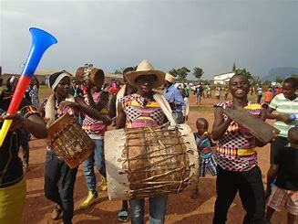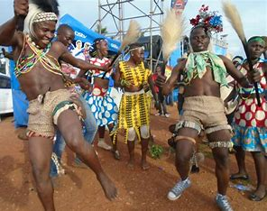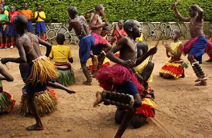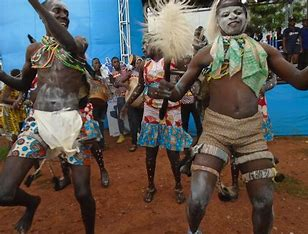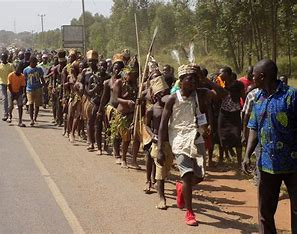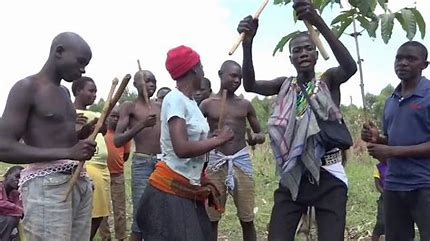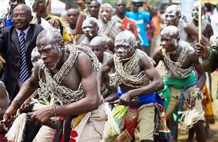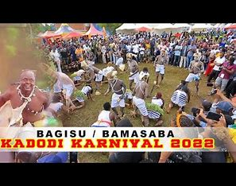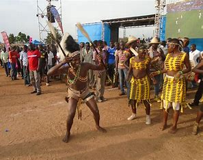Magombe Wakitonyi, an elder from Mutoto, says the people of North Bugisu or Budadiri county, originated from a man known as Mugisu, the son of Masaba, who is the eponymous ancestor of the Bamasaba. These are the people called Bagisu.
Those in central and southern Bugisu were respectively founded by Ngokhwe and Wukuya, Mugisu’s brothers. The Central Bagisu are generally called Bangokho while those in the south are loosely called Basukuya, named after their respective founders.
Within these large groups there are numerous divisions and clans bearing the names of their supposed founders. The correct collective name for the people of Bugisu is, therefore, Bamasaba.
It is held that the name ‘Bagisu’ was mistakenly applied to the entire tribe by the Baganda and the British who were ignorant of the local situation. The origin of circumcision among the Bamasaba is linked to the ‘Barwa’ otherwise known as the Sebei.
It is held that Masaba wanted to marry a woman from Sebei, but this could not happen unless he was circumcised.
So, circumcision was introduced by Nabarwa and originally performed in accordance with the customs and rites of the Barwa.
The Bamasaba refer to their circumcision as ‘Imbalu. ‘Nabarwa’ also means ‘that of, or which belongs to the Barwa’.
Mutoto village in Bungokho in Central Bugisu is regarded as the traditional ground where the first Mugisu male was circumcised.
Ever since, every circumcision year, it is customary for circumcision to start in Bungokho before spreading to other parts of Bugisu.
Currently, it is performed every even year, but in the past, it could be postponed in the event of a national crisis such as prolonged drought, famine, epidemics, and war.
Although circumcision experts/surgeons are found in every clan, their work is not necessarily restricted by clan boundaries.
They often perform their duties beyond the traditional boundaries of their clans.
Wakitonyi’s account is supported by the journal, ‘The Historical Origins of Circumcision among the Bamasaba’, by Bryan Wasike.
Wakitonyi argues that there are different accounts of how the practice started.
“Some say it was a Barwa woman who started it.
The woman was married to Masaba and when they had children they were circumcised after the tradition of Nabarwa.”
He added further that it was Nabarwa who instructed Masaba in the practice of circumcision for, according to the Barwa, women also performed circumcision.
Masaba was also circumcised by the Barwa
, Wakitonyi said.
Another reason given for the adoption of the ‘circumcision of Nabarwa’ is that Masaba proposed to Nabarwa who replied that she could never marry an uncircumcised man (umusinde or boy).
In order to marry her, she proposed he gets circumcised according to her people’s customs. Masaba was circumcised and so became a man (umusani) to get his bride.
Dr Stephen Mun’goma, the chairman Governing Board of the Inzu Ya Masaba and director of the Uganda Christian University, Mbale University College, weighed in on the debate as to when circumcision started.
To the best of my knowledge, it began in 1815 and that is why the circumcision year is named Nabarwa. Others think that it began 2018 years ago, and if it is the correct date, it is still within the period of 200 years,
he said.
The actual origin of this practice is mysterious even among the Bagisu themselves. One tradition states that it originated from the demand by the Banpa (Kalenjin) when Masaba, the Bagisu hero ancestor, wanted to marry a Kalenjin girl.
Another tradition claims that the first person to be circumcised had a complication with his sexual organ and that circumcision started as a surgical operation to save the man’s life.
There is yet another story that the first person to be circumcised had it done as a punishment for seducing other people’s wives.
Legend states that it was decided to partially castrate him by way of circumcision. When he recovered he resumed his former practices and rumour went around that he had become excellent at *. In order to compete favourably, other men decided to circumcise also.
In January, prospective male candidates aged between 15 and 20 years, assemble in each village and are regimented in various ways in order to imbue them with courage in readiness for initiation.
Between March and August, they are taken through the isonja preparatory dance. It features specialist performers/singers called by different names, ‘kyilali’, ‘namwenya’ or ‘uwimbi’. The singers use special equipment, songs and dance strokes.
Towards August, before the actual circumcision event, the candidates are taken through a traditional pass called ‘luwanda’ where they meet other clans and proceed to the sacred swamps.
They are taken to mwitosi (mud) where they are smeared with clay (letosi).
They are called all sorts of names and traditional beer is spat upon them. as shown below
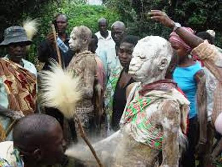
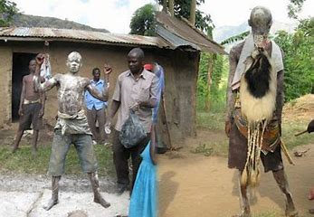
A day to the circumcision, the elders or ‘basakhulu’, clean out the sacred graves and rebuild the shrines as designed and desired by each clan.
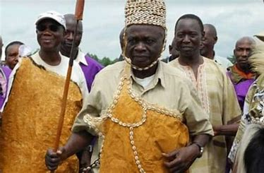
During this stage, each candidate is taken to his mother’s clan (ibwiwana) to announce his intensions to his uncles and receive gifts before they go to the courtyard prepared for circumcision.
On the day of circumcision, after elaborate instructions and blessings from elders, the initiates are taken to the appointed grounds by each clan to face the surgeon (umukembi), who uses a double-edged knife to remove the foreskin.
 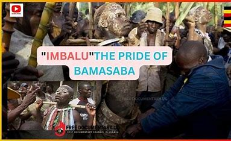
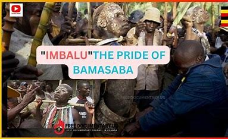
On this day, the dancing is so intense and the candidates are possessed because of the rituals carried out on them, they feel the urge to face the knife,” Bryan Wasike who faced the knife in 2016 said.
After circumcision, drums are beaten and people indulge in dancing and drinking. The drums are called ifumbo ye Shiguga (the drums of the clans).
The process is so quick and professional. This is the best part that everyone has been waiting for.
Wasike adds
The surgeon is a specialist who has been doing this for a long time, he has to accomplish the task in 60 seconds or less, failure to do that will result in punishment. Should the surgeon also hurt the candidate in a way that can endanger the life of the candidate, the surgeon will be in trouble. The candidate is also not supposed to shake or fear during the process, lest they face punishment and are deemed weak,
The imbalu cycle that began with the ‘isonja’ singing and dancing then terminates with the ‘ineema’ confirmation ceremony. During this ceremony, which is always held the following year after circumcision, the fully healed young men are coached on how to live and behave responsibly and are confirmed as full members of the clan. They are also seen as men basani (singular, umusani) and not basinde (singular, umusinde) as previously known.
The Masaba male, regardless of age, status or wealth is a full man after circumcision and is allowed to marry and beget children and participate in the decision- making process of the clan.

The Bagisu are a highly superstitious people
One of the unique social customs of the Bagisu is male circumcision.
Before circumcision, an initiate is administered with a certain herb called ityanyi. Its purpose is to arouse interest in circumcision within the candidate. Often the ityanyi is tied round the initiate’s big toe or it is put in such a place where he might jump over it unawares.
It is believed that if the candidate who has taken the ityanyi is delayed or hindered from being circumcised, he might end up circumcising himself as his mind is said to be so much stimulated towards circumcision that no other thing can distract him.
Circumcision among the Bagisu occurs biannually during leap years. Every male has to perform the ritual upon reaching puberty.
Those who abscond are hunted down and forcefully and scornfully circumcised. Before the day of circumcision, the initiates are tuned up by having them walk and dance around the villages for three days.
Their heads are sprinkled with cassava flour and painted with malwa-yeast paste. Their relatives dance with them and there is much drumming and singing.
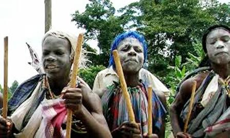
Bagisu People After Circumcision,
The initiate is made to sit down on a stool and he is then wrapped in a piece of cloth. After that he is taken to his father’s house and made to move around the house before entering it.
For three days, the initiate is not allowed to eat with his hands. He is fed. They say that it is because he is not yet fully initiated into manhood.
After three days, the circumciser is invited to perform the ritual of washing the initiate’s hands. It is after this ritual that the initiate can eat with his hands.
On the same day, the initiate is declared a man. It is then that custom allows him to marry. During the ceremony the initiate is instructed on the duties and demands of manhood.
He is informed in addition that agriculture is very important and advised to always behave like a man. It is believed that the healing of the cuts depends on how many goats have been slaughtered during the initiate’s circumcision.
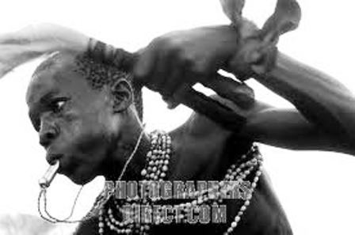
A ritual is performed. All the new initiates in the locality have to attend. This ritual is called Iremba. It is an important occasion which all the village people and, these days, even government officials attend.
During ritual proceedings, the initiate could pick any girl and have sexual intercourse with her. The girl was not supposed to refuse. It is believed that if she refused, she would never have children when she got married.
This poses problems of Christian females if they are chosen. Previously, circumcision was done in specific enclosures and only the initiates and the circumciser were allowed in.
The rest of the congregation would just wait and listen from outside the enclosure. Today, however, all people are allowed to watch the whole process. Firmness the and courageous endurance on the part of initiate is appreciated as a sign of bravery.